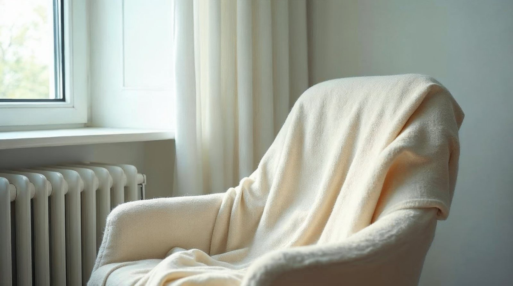
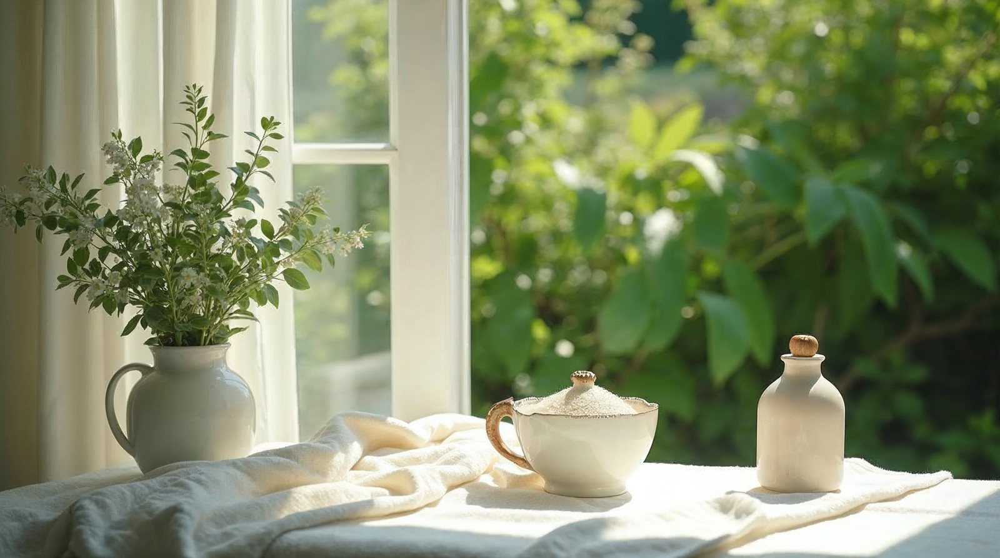
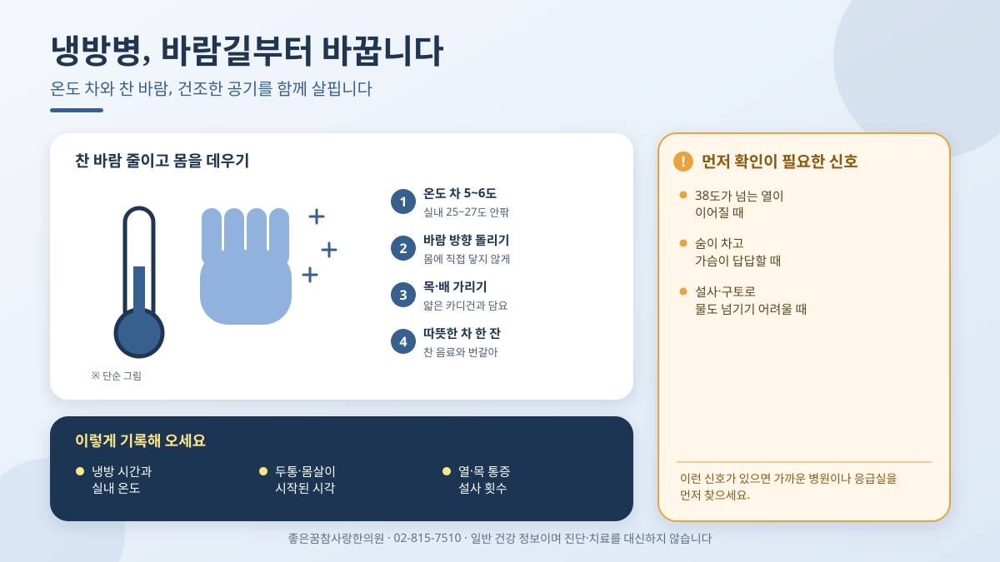

이종호 한의사 감수좋은꿈참사랑한의원 대표원장 (한의사 면허번호 19769)발행 2026-11-26 · 수정 2026-11-26
이 글의 차례
한여름 오후, 사무실 천장에서 내려오는 찬 바람이 정수리와 목덜미를 계속 스칩니다. 처음에는 시원해서 좋았는데, 퇴근 무렵이 되면 머리가 띵하고 어깨가 뻣뻣하며 몸이 으슬으슬합니다. 밖으로 나가면 다시 후끈한 열기가 덮치고, 집에 와서는 또 에어컨을 켭니다.
여름에 진료실을 찾으시는 분들께 이런 이야기를 참 많이 듣습니다. "감기인 줄 알았는데 열은 없어요." "주말에 에어컨 없는 곳에 다녀오면 오히려 몸이 가벼워요." 흔히 냉방병이라고 부르는 상태입니다. 정식 병명이라기보다, 냉방이 된 공간에서 오래 지내며 생기는 여러 불편을 묶어 부르는 말에 가깝습니다.
냉방병은 대단한 병처럼 보이지 않아서 그냥 참고 넘기시는 경우가 많습니다. 그런데 한 번 시작되면 여름 내내 두통과 피로, 배탈이 번갈아 찾아와 일상이 무거워집니다. 그래서 저는 찬 바람을 줄이는 방법과 함께, 몸이 온도 변화에 어떻게 반응하고 있는지를 같이 살펴보자고 말씀드립니다.
냉방병은 어떤 불편으로 나타나나요?
냉방병은 사람마다 드러나는 모습이 조금씩 다릅니다. 머리가 띵하고 무거운 두통, 목과 어깨가 굳는 느낌, 몸살처럼 온몸이 쑤시는 느낌이 흔합니다. 코가 막히거나 목이 칼칼하고, 눈이 뻑뻑해지는 분도 많습니다.
배 쪽으로 오는 분도 계십니다. 아랫배가 살살 아프거나 묽은 변을 보고, 입맛이 떨어집니다. 손발과 배는 차가운데 얼굴은 화끈거리는 분, 오후만 되면 기운이 빠지고 졸린 분, 생리 주기가 흔들리거나 생리통이 심해졌다고 하시는 분도 있습니다.
이런 불편은 대개 냉방된 곳에서 오래 지낸 날 심해지고, 에어컨이 없는 곳에서 하루 이틀 지내면 덜해지는 흐름을 보입니다. 이 흐름이 보이면 냉방 환경이 몸에 부담을 주고 있다는 실마리가 됩니다.
왜 에어컨 바람에 몸이 지칠까요
우리 몸은 바깥 온도가 바뀌면 피부의 혈관을 조였다 풀었다 하며 체온을 맞춥니다. 이 일을 맡은 것이 자율신경입니다. 한여름에 30도가 넘는 바깥과 20도 남짓한 실내를 하루에도 여러 번 오가면, 자율신경은 쉴 틈 없이 조였다 풀었다를 반복해야 합니다.
이 조절이 지치면 혈액 순환이 고르지 않게 되고, 머리가 무겁거나 손발이 차거나 쉽게 피곤해지는 형태로 드러납니다. 특히 실내외 온도 차가 크게 벌어질수록 몸이 감당해야 할 몫이 커집니다.
찬 바람이 한곳으로 계속 닿는 것도 문제입니다. 목덜미나 어깨에 찬 바람을 오래 맞으면 그 주변 근육이 움츠러들어 굳고, 이것이 뒷목 당김과 두통으로 이어지기 쉽습니다. 아침에 일어났는데 목이 돌아가지 않는다는 분 가운데는 밤새 에어컨 바람을 맞으신 경우가 적지 않습니다.
에어컨을 켜면 공기도 건조해집니다. 코와 목의 점막이 마르면 칼칼함과 코막힘이 생기고, 바깥 자극에 쉽게 예민해집니다. 여기에 찬 음료와 아이스커피를 자주 드시면 속까지 차가워져 배탈이 겹치기도 합니다.
한의학에서는 이런 모습을 여름철 찬 기운이 겉에 머물고 속까지 차가워진 상태로 설명해 왔습니다. 진찰에서 쓰는 전통적인 표현일 뿐 따로 병명을 붙이는 것은 아니지만, 겉과 속을 함께 살핀다는 점에서 냉방병을 이해하는 데 도움이 되는 시각입니다.
결국 냉방병은 찬 바람 하나 때문이라기보다 온도 차, 한곳에 닿는 바람, 건조한 공기, 찬 음식이 겹쳐서 생기는 경우가 많습니다. 그래서 어느 한 가지만 바꾸기보다 내 생활에서 가장 크게 겹치는 요인부터 하나씩 덜어 내는 것이 현실적인 순서입니다.
여름 감기나 장염과는 어떻게 다른가요?
냉방병과 여름 감기는 겉으로 보기에 비슷합니다. 다만 감기는 바이러스 감염이라 목이 붓고 아프거나 열이 나고, 콧물이 진해지며, 며칠에 걸쳐 앓고 지나가는 흐름이 있습니다. 냉방병은 열이 거의 없고, 냉방 환경을 벗어나면 덜해지는 경우가 많습니다.
장염은 상한 음식이나 감염으로 생기기 때문에 설사가 하루에 여러 번 이어지고, 구역질이나 열이 함께 오는 일이 많습니다. 냉방병의 배탈은 대체로 묽은 변 정도에 그치고, 배를 따뜻하게 하면 한결 편해지는 경우가 많습니다.
물론 두 가지가 겹칠 수도 있습니다. 냉방 환경에서 몸이 지쳐 있으면 감기에도 쉽게 걸리니까요. 그래서 열, 목 통증, 설사 횟수를 기록해 오시면 무엇이 주된 문제인지 나누는 데 큰 도움이 됩니다.
이런 분들이 냉방병을 더 겪기 쉽습니다
하루 대부분을 냉방된 사무실이나 매장에서 보내시는 분, 에어컨 송풍구 바로 아래에 자리가 있는 분이 먼저 떠오릅니다. 외근과 실내 근무를 번갈아 하시는 분은 하루에도 온도 차를 여러 번 겪게 됩니다.
평소 손발이 차고 추위를 잘 타시는 분, 소화가 약해 찬 음식에 배탈이 잘 나는 분도 냉방에 예민합니다. 몸의 열을 만드는 근육량이 적거나, 잠이 부족해 몸이 지쳐 있으면 같은 바람에도 더 힘들어지십니다.
어르신과 아이도 살펴야 합니다. 어르신은 온도 변화를 늦게 느끼셔서 추운 줄 모르고 오래 계시기도 하고, 아이는 땀을 흘린 채 찬 바람 앞에서 잠들기 쉽습니다. 생리 중이거나 출산 뒤 회복기에 계신 분도 몸을 조금 더 따뜻하게 지켜 주시는 것이 좋습니다.
냉방병이 오래 끌 때 함께 살피는 것
냉방병의 불편은 여름이 지나면 대개 가라앉습니다. 그런데 가을이 되어도 두통과 피로가 이어지거나, 해마다 여름이면 같은 불편이 더 심해진다면 냉방만의 문제가 아닐 수 있습니다. 이럴 때는 잠, 식사, 마음의 긴장처럼 몸 전체의 흐름을 함께 들여다봅니다.
여름에는 더위로 잠이 얕아지기 쉽고, 입맛이 없어 끼니를 대충 넘기거나 찬 국수와 음료로 때우는 날이 늘어납니다. 잠과 영양이 부족하면 몸의 온도 조절도 더 힘들어집니다. 냉방병을 덜어 내려면 바람을 피하는 것과 함께 이런 바탕을 채우는 일이 필요합니다.
두통이 유난히 잦다면 눈의 피로나 자세도 함께 봅니다. 냉방된 사무실에서 모니터 앞에 오래 앉아 있으면 목과 어깨가 굳고 눈이 마르며, 찬 바람이 여기에 더해져 두통이 쉽게 생깁니다. 한 시간에 한 번 자리에서 일어나 목과 어깨를 천천히 돌려 주시고, 먼 곳을 바라보며 눈을 쉬게 해 주세요.
손발 저림, 두근거림, 이유 없는 체중 변화처럼 냉방과 상관없어 보이는 불편이 함께 있다면, 빈혈이나 갑상선 같은 다른 원인이 없는지도 확인이 필요합니다. 이런 부분은 내과 검사를 먼저 권해 드리고, 결과를 가져와 주시면 함께 살펴봅니다.
먼저 이렇게 여쭙니다
처음 오시면 대략 이런 순서로 여쭙니다. 미리 떠올려 오시면 이야기가 수월해집니다.
- 하루에 냉방된 공간에서 지내는 시간은 어느 정도인가요?
- 에어컨 바람이 몸의 어느 쪽으로 오나요? 자리를 옮길 수 있나요?
- 실내 온도는 대략 몇 도로 맞춰져 있나요?
- 열이 나거나 목이 붓고 아프지는 않나요?
- 설사나 배 아픔이 있다면 하루 몇 번인가요?
- 잠들 때도 에어컨을 켜 두시나요?
- 찬 음료나 아이스커피는 하루에 몇 잔 드시나요?
정확한 숫자를 몰라도 괜찮습니다. '오후 세 시쯤 되면 머리가 아프다', '주말에는 덜하다' 같은 흐름만 말씀해 주셔도 충분합니다.
일상에서 먼저 해 볼 수 있는 것
냉방병은 환경을 조금만 바꿔도 몸이 한결 가벼워지는 경우가 많습니다. 하나씩 해 보시고 맞는 것을 이어 가시면 됩니다.
- 실내외 온도 차를 5~6도 안팎으로 맞추기(실내 25~27도 정도)
- 바람이 몸에 직접 닿지 않게 송풍 방향을 위나 벽 쪽으로 돌리기
- 얇은 카디건이나 스카프로 목덜미와 어깨, 배를 가리기
- 한두 시간마다 창문을 열어 환기하고 잠깐 바깥 공기 쐬기
- 찬 음료는 미지근한 물이나 따뜻한 차와 번갈아 마시기
- 잠들 때는 예약 끄기를 맞추고 바람이 몸에 닿지 않게 하기
사무실처럼 온도를 마음대로 정할 수 없는 곳이라면, 무릎 담요와 양말, 목을 덮는 옷을 자리에 두시길 권합니다. 발과 목, 배를 따뜻하게 지키는 것만으로도 오후 두통이 덜하다고 말씀하시는 분이 많습니다.
몸의 열을 만드는 힘을 기르는 것도 도움이 됩니다. 점심 뒤 10분 정도 그늘을 따라 걷거나, 퇴근 뒤 가볍게 땀이 날 정도로 움직이면 자율신경이 온도 차에 적응하는 연습이 됩니다. 땀을 흘린 뒤에는 바로 찬 바람 앞에 서지 말고 땀을 닦은 뒤 들어가세요.
가습기나 젖은 수건으로 실내가 너무 건조하지 않게 하고, 물은 조금씩 자주 드시는 것이 좋습니다. 코와 목이 마르지 않으면 칼칼함과 코막힘이 덜할 수 있습니다.

온도를 함께 쓰는 공간에서는
사무실이나 집처럼 여러 사람이 같은 에어컨을 쓰는 곳에서는 온도를 내 몸에만 맞추기 어렵습니다. 더위를 많이 타는 분과 추위를 많이 타는 분이 한 공간에 있으면, 누군가는 늘 춥거나 덥게 지내게 됩니다.
이럴 때는 온도 다툼보다 내 자리의 바람길을 바꾸는 쪽이 현실적입니다. 송풍구 아래 자리라면 바람막이 가림판을 쓰거나, 자리 배치를 상의해 보시는 것도 방법입니다. 몸이 찬 쪽이 옷으로 조절하는 편이, 더운 쪽이 견디는 것보다 수월한 경우가 많습니다.
집에서는 거실을 시원하게 두더라도 잠자는 방은 조금 덜 차게, 아이와 어르신이 주로 지내는 자리는 바람이 직접 닿지 않게 정해 두시면 좋습니다. 가족마다 편한 온도가 다르다는 것을 서로 알고 있는 것만으로도 조절이 한결 쉬워집니다.
한의원에서 함께 살필 수 있는 경우
- 여름마다 냉방된 곳에서 두통과 뒷목 당김이 반복되는 경우
- 에어컨 아래에서 지내면 몸살처럼 쑤시고 기운이 빠지는 경우
- 찬 바람과 찬 음료 뒤 배가 아프고 묽은 변이 이어지는 경우
- 손발과 배는 찬데 얼굴로 열이 오르는 느낌이 있는 경우
- 여름이 되면 잠이 얕아지고 오후마다 처지는 경우
좋은꿈참사랑한의원에 오시면 먼저 아래 '먼저 확인이 필요한' 신호가 없는지부터 봅니다. 그다음 맥을 짚고, 목과 어깨, 배를 직접 만져 보며 굳거나 차가운 곳이 어디인지 확인합니다.
진찰 내용을 바탕으로 침, 온열 관리, 한약 상담 가운데 지금 상태에 맞는 것을 함께 정합니다. 한약을 상의할 때는 드시는 약을 먼저 확인하고 신중하게 정하며, 임신 중이시거나 가능성이 있다면 먼저 알려 주세요. 산부인과 선생님과 상의하는 것이 우선입니다.
열이 나고 목이 많이 붓는다면 이비인후과나 내과 진료를 먼저 받으시고, 한의원 진료는 그와 나란히 몸의 회복과 냉방 환경에 대한 적응을 돕는 쪽으로 함께 갑니다. 처방받은 약은 상의 없이 멈추지 않습니다.
이렇게 기록해 오시면 상담이 쉬워집니다
일주일 정도만 간단히 적어 보시면 몸이 어떤 환경에서 힘들어하는지 보이기 시작합니다.
- 냉방된 곳에서 지낸 시간과 대략의 실내 온도
- 두통, 어깨 결림, 몸살 느낌이 시작된 시각
- 열이 있었는지, 목이 아팠는지
- 배 아픔이나 묽은 변이 있었던 날과 횟수
- 찬 음료를 마신 양과 잠든 시각
- 에어컨 없는 곳에서 지낸 날의 몸 상태
평일과 주말을 나란히 놓고 보면, 냉방 환경과 불편 사이의 연결이 생각보다 또렷하게 보입니다. 그 기록이 다음에 무엇을 바꿀지 정하는 출발점이 됩니다.

여름을 조금 덜 지치게 보내기 위해
냉방병은 몸이 약해서 생기는 것이 아니라, 더위와 냉방 사이를 오가며 몸이 열심히 버틴 흔적에 가깝습니다. 그 수고를 조금 덜어 주면 됩니다.
이번 주에는 목덜미를 가리는 얇은 옷 하나, 송풍 방향 바꾸기, 찬 음료 한 잔을 따뜻한 차로 바꾸기 가운데 하나만 골라 보세요. 작은 변화가 쌓이면 여름 오후가 조금씩 가벼워질 수 있습니다. 다음에 오시면 일주일 동안의 기록을 함께 펼쳐 보며, 어떤 바람과 어떤 시간대가 가장 부담이었는지 같이 찾아보겠습니다.
이런 증상은 먼저 확인이 필요합니다
- 38도가 넘는 열이 이어지거나 숨이 차고 가슴이 답답한 경우
- 설사와 구토가 계속되어 물도 넘기기 어렵고 소변이 크게 줄어든 경우
이런 신호가 있으면 한의원보다 가까운 병원이나 응급실을 먼저 찾으세요.
함께 읽으면 좋은 글
- 스트레스를 받으면 뒷목이 당기고 머리가 아픈 긴장성 두통은 어떻게 살피나요?
- 찬 음식이나 찬 음료를 먹으면 배가 아플 때는 어떻게 하나요?
- 손발이 찬 수족냉증, 레이노·갑상선·빈혈과 어떻게 구분하나요?
- 환절기에 목이 건조하고 칼칼할 때는 어떻게 관리하나요?
- 검사에서는 이상이 없다는데 두근거림, 어지럼, 소화불량, 손발 저림이 번갈아 찾아오는 자율신경실조는 어떻게 살피나요?

여쭙는 것
- 하루에 냉방된 공간에서 지내는 시간은 어느 정도인가요?
- 에어컨 바람이 몸의 어느 쪽으로 오나요? 자리를 옮길 수 있나요?
- 실내 온도는 대략 몇 도로 맞춰져 있나요?
생활에서 해 볼 것
- 실내외 온도 차를 5~6도 안팎으로 맞추기(실내 25~27도 정도)
- 바람이 몸에 직접 닿지 않게 송풍 방향을 위나 벽 쪽으로 돌리기
- 얇은 카디건이나 스카프로 목덜미와 어깨, 배를 가리기
한의원에서 함께 살필 것
- 여름마다 냉방된 곳에서 두통과 뒷목 당김이 반복되는 경우
- 에어컨 아래에서 지내면 몸살처럼 쑤시고 기운이 빠지는 경우
- 찬 바람과 찬 음료 뒤 배가 아프고 묽은 변이 이어지는 경우
먼저 확인이 필요한 신호
- 38도가 넘는 열이 이어지거나 숨이 차고 가슴이 답답한 경우
- 설사와 구토가 계속되어 물도 넘기기 어렵고 소변이 크게 줄어든 경우
한눈에 보는 표
| 구분 | 핵심 |
|---|---|
| 여쭙는 것 | 하루에 냉방된 공간에서 지내는 시간은 어느 정도인가요? 에어컨 바람이 몸의 어느 쪽으로 오나요? 자리를 옮길 수 있나요? |
| 생활에서 해 볼 것 | 실내외 온도 차를 5~6도 안팎으로 맞추기(실내 25~27도 정도) 바람이 몸에 직접 닿지 않게 송풍 방향을 위나 벽 쪽으로 돌리기 |
| 한의원에서 함께 살필 것 | 여름마다 냉방된 곳에서 두통과 뒷목 당김이 반복되는 경우 에어컨 아래에서 지내면 몸살처럼 쑤시고 기운이 빠지는 경우 |
| 먼저 확인이 필요한 신호 | 38도가 넘는 열이 이어지거나 숨이 차고 가슴이 답답한 경우 설사와 구토가 계속되어 물도 넘기기 어렵고 소변이 크게 줄어든 경우 |
자주 묻는 질문
냉방병은 감기약을 먹으면 되나요?
열이나 목 통증 없이 냉방 환경에서만 심해지는 불편이라면 감기와는 결이 다를 수 있습니다. 약을 드시기 전에 증상의 흐름을 살펴보시고, 열이 나거나 목이 붓는다면 내과나 이비인후과 진료를 먼저 받아 보세요.
에어컨을 아예 끄고 지내야 하나요?
그렇지 않습니다. 더위도 몸에 부담이 되기 때문에 냉방은 하시되, 실내외 온도 차를 줄이고 바람이 몸에 직접 닿지 않게 하는 쪽을 권합니다.
잠잘 때 에어컨은 어떻게 켜는 것이 좋을까요?
잠들기 전에 방을 식혀 두고 예약 끄기를 맞추거나, 온도를 조금 높게 두고 바람 방향을 몸에서 비켜 두시길 권합니다. 배와 발은 얇은 이불로 덮어 주세요.
냉방병일 때 침 치료를 받아도 되나요?
진찰 뒤 목과 어깨의 굳은 정도, 배의 상태를 보고 필요하다고 판단되면 침 치료를 함께 정합니다. 드시는 약이나 임신 가능성이 있다면 먼저 말씀해 주세요.
아이도 냉방병에 걸리나요?
아이도 땀을 흘린 채 찬 바람을 오래 맞으면 배탈이나 코막힘, 처짐이 생길 수 있습니다. 땀을 닦아 주고 배를 덮어 주며, 열이 나면 소아청소년과 진료를 먼저 받아 보세요.
좋은꿈참사랑한의원은 재진 때 지난번 이야기부터 이어서 여쭙니다. 진료시간과 예약은 오시는 길에서 확인하세요.
어디서 상담받을 수 있나요?
좋은꿈참사랑한의원은 서울 동작구 만양로2길 2 신성빌딩 3층·5층(서울 동작구 상도동, 7호선 상도역 3번 출구 근처)에 있습니다. 한의사 3명(이종호 대표원장, 조영기 수석진료원장, 정원영 진료원장)이 진료합니다. 진료시간은 평일 09:30~20:00(점심 13:00~14:00), 토·일·공휴일 09:30~15:00이며, 방문 전 전화로 확인을 권합니다. 예약은 네이버 예약, 카카오톡 상담, 전화 02-815-7510로 받습니다.
이 글은 일반적인 건강 정보이며 개인의 진단이나 치료를 대신하지 않습니다. 증상이 있거나 복용 중인 약이 있다면 진료를 통해 확인하세요. 치료 효과는 개인마다 다를 수 있습니다.
작성 기준: 일반적으로 알려져 있는 건강 정보를 참고해 정리했습니다(대표원장 감수). 증상 기록은 1~2주 동안 하루 1회, 비슷한 시간에 적어 오시면 지난 상태와 비교하기 쉽습니다.